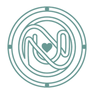

NutesiaDelete your Nutesia account
In the app (fastest)
- Open Nutesia and go to the Profile tab.
- Scroll to Settings & Legal and tap Delete account.
- Confirm. Email accounts are asked for their password.
Your account and data are deleted immediately.
Without the app
If you no longer have the app, email us from the address you signed up with, with the subject "Delete my Nutesia account": (contact email to be added). We will confirm and delete your account within 30 days.
Guest (anonymous) accounts aren't linked to an email address. Their data can only be deleted from the app on the device that created them. If the app has been uninstalled, the account can no longer be used.
What is deleted
- Your sign-in account (email or guest)
- Your profile: name, age, gender, height, weight, goal and targets
- Your food log and nutrition history
- Your credit balance and credit history
- Data cached on your device
What may be kept
Analytics data that isn't linked to your name or email is kept for up to 14 months. Copies in our providers' backups expire within their normal backup cycles. We keep nothing else.